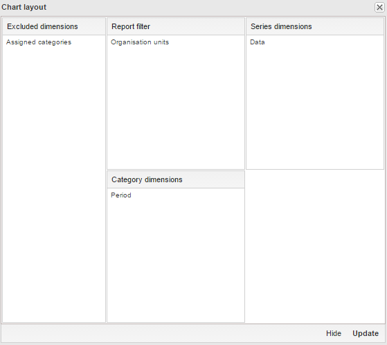

|  |
You can define which dimension of the data you want to appear as series, category and filter.
-
Click Layout.
-
Drag and drop the dimensions to the appropriate space. Only one dimension can be in each section.
-
Click Update.
Example 12.1. Chart illustrating the concepts of series, categories and filter

|
-
Series: A series is a set of continuous, related elements (for example periods or data elements) which you want to visualize in order to emphasize trends or relations in its data.
-
Categories: A category is a set of elements (for example indicators or organisation units) for which you want to compare its data.
-
Filter: The filter selection will filter the data displayed in the chart. Note that if you use the data dimension as filter, you can only specify a single indicator or data set as filter item, whereas with other dimension types you can select any number of items.